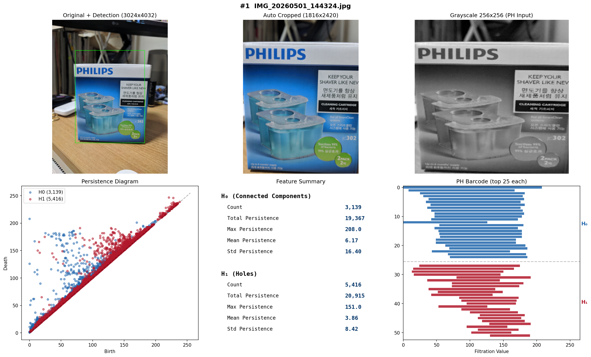

Weekly Log
2주차 — 서버 인프라 구축 및 다중 상품 식별 검증
Latest
▼
End-to-End 시스템(Android → EC2 → GUDHI → MySQL)을 구축하고, 6종 상품 60장으로 PH 바코드 기반 상품 식별을 정량 검증하였다. 외형이 뚜렷이 다른 상품은 90~100% 식별되지만, 유사한 질감/구조의 상품(stanley↔kavalan)에서는 한계가 확인되었다.
71.7%
Top-1 Accuracy (43/60)
88.3%
Top-3 Accuracy (53/60)
96.7%
Top-5 Accuracy (58/60)
6 / 60
Products / Images
PH Statistics per Product (mean ± std)
| Product | H₀ count | H₁ count | H₀ max pers. | H₁ max pers. | H₀ total pers. | Time |
|---|---|---|---|---|---|---|
| Philips JC302 | 1,735 ± 217 | 2,524 ± 467 | 106~206 | 91~156 | 11,476 | 767ms |
| pokemon go ++ | 1,888 ± 170 | 2,336 ± 254 | 159~177 | 179~223 | 9,706 | 691ms |
| Airpods Pro | 1,872 ± 204 | 2,307 ± 309 | 134~166 | 172~211 | 6,602 | 678ms |
| stanley | 2,029 ± 370 | 2,638 ± 518 | 114~175 | 198~225 | 8,130 | 674ms |
| tubing band | 1,764 ± 232 | 2,322 ± 304 | 152~168 | 188~229 | 10,146 | 774ms |
| kavalan | 2,164 ± 377 | 2,938 ± 566 | 84~164 | 205~226 | 9,345 | 683ms |
Per-Product Top-1 Accuracy
| Product | Top-1 | Misclassified as |
|---|---|---|
| pokemon go ++ | 10/10 (100%) | — |
| Philips JC302 | 9/10 (90%) | → Airpods Pro ×1 |
| Airpods Pro | 9/10 (90%) | → pokemon go ++ ×1 |
| tubing band | 8/10 (80%) | → kavalan ×2 |
| kavalan | 5/10 (50%) | → tubing band ×3, stanley ×2 |
| stanley | 2/10 (20%) | → kavalan ×6, Airpods Pro ×2 |
Centroid L2 Distance (Z-score normalized)
| Pair | Centroid dist. | Mean inter-class dist. | Min dist. |
|---|---|---|---|
| stanley ↔ kavalan | 1.95 | 4.79 | 2.09 |
| pokemon go ++ ↔ Airpods Pro | 3.30 | 4.81 | 2.38 |
| Philips JC302 ↔ pokemon go ++ | 3.55 | 5.18 | 3.20 |
| tubing band ↔ kavalan | 3.74 | 5.29 | 2.53 |
| stanley ↔ tubing band | 4.75 | 6.27 | 3.71 |
| Airpods Pro ↔ tubing band | 6.01 | 7.21 | 4.79 |
Intra-class Cohesion (same product)
2.60
pokemon go ++
most consistent
most consistent
3.62
tubing band
4.43
kavalan
4.68
Airpods Pro
4.88
stanley
4.93
Philips JC302
3 Products (Philips, pokemon, Airpods)
93.3%
Top-1: 28/30 — 외형이 확실히 다른 상품 간 식별
→
6 Products (+stanley, tubing, kavalan)
71.7%
Top-1: 43/60 — 유사 질감 상품 추가 시 정확도 하락
Philips JC302의 H₁ Max Pers.(91~156)는 다른 5개 상품(172~229)과 완전 분리
pokemon go++는 H₀ Max Pers. 범위가 159~177로 가장 좁음 — 촬영 조건 무관 안정적 지문
stanley/kavalan/tubing band의 H₁ Max Pers. 범위(188~229) 중첩 → 17건 중 13건(76%) 혼동
stanley↔kavalan 중심점 거리 1.95 (다른 쌍의 절반 이하) — 금속 질감+텍스트 라벨의 위상적 유사성
Top-5 96.7% → PH 바코드를 1차 필터로 사용하고 보조 특징(색상/OCR) 결합 시 실용적 식별 가능
pokemon go++는 H₀ Max Pers. 범위가 159~177로 가장 좁음 — 촬영 조건 무관 안정적 지문
stanley/kavalan/tubing band의 H₁ Max Pers. 범위(188~229) 중첩 → 17건 중 13건(76%) 혼동
stanley↔kavalan 중심점 거리 1.95 (다른 쌍의 절반 이하) — 금속 질감+텍스트 라벨의 위상적 유사성
Top-5 96.7% → PH 바코드를 1차 필터로 사용하고 보조 특징(색상/OCR) 결합 시 실용적 식별 가능
▸ 환경 구축 상세
System Architecture
카메라 촬영
Retrofit 2
Nexus 6P
Retrofit 2
Nexus 6P
HTTPS
Multipart
Multipart
EC2 t3.medium · kyuwan.kim
Storage
JSON
Betti Numbers
Persistence Pairs
PH 바코드
Persistence Pairs
PH 바코드
단일 EC2 · GUDHI(Python)를 Spring Boot에서 subprocess로 호출
- AWS EC2(t3.medium, Seoul) 인스턴스에 nginx, Java 17, MySQL 8.4, Python 3.14 설치
- 도메인(kyuwan.kim) 연결, Let's Encrypt SSL 인증서 발급 및 자동 갱신 설정
- Spring Boot 3.5.0 API 서버 구현 — GUDHI(Python subprocess)로 Sublevel Set Filtration PH 계산
- REST API 3종 구현: POST /api/tda/analyze, GET /api/tda/results, GET /health
- MySQL DB 설계 — tda_analysis + tda_persistence_pair(H₀/H₁/H₂ birth-death 쌍) 2개 테이블
- systemd 서비스 등록, nginx 리버스 프록시(kyuwan.kim/api/* → :8080) 구성
- Android 앱 개발 — 카메라 촬영, Multipart 업로드, 결과 목록 조회 (Retrofit 2 + OkHttp, Nexus 6P 타겟)
3
GitHub 레포지토리
4
REST API 엔드포인트
2
DB 테이블
HTTPS
보안 통신
| Component | Stack | Role |
|---|---|---|
| tda-api | Spring Boot 3.5 · Java 17 · GUDHI | REST API + TDA 계산 |
| tda-android | Java · Android SDK 34 · Retrofit 2 | 촬영 + 업로드 클라이언트 |
| EC2 | Ubuntu 26.04 · nginx · MySQL 8.4 | 서버 인프라 |
1주차 — 환경 구축 및 파이프라인 검증
▼
- Python + JavaPlex 기반 PH 바코드 파이프라인 구현
- 같은 상품 10장 촬영 — 조건(각도, 거리, 조명)별 PH 바코드 일관성 검증
- Canny 엣지 자동 크롭 실패(5/10) → 고정 크롭 1816×2420으로 해결
- 18차원 특징 벡터 설계 — H₀/H₁ count, total/max/mean/std persistence, 구간별 Betti number

원본 촬영 → 고정 크롭 → 흑백 변환 → Persistence Diagram → PH Barcode
| Image | H₀ count | H₁ count | H₀ max pers. | H₁ max pers. |
|---|---|---|---|---|
| img_01 | 5,803 | 5,534 | 247 | 27 |
| img_02 | 4,784 | 4,499 | 245 | 31 |
| img_03 | 4,869 | 4,598 | 246 | 23 |
| img_04 | 5,256 | 4,970 | 247 | 21 |
| img_05 | 4,614 | 4,326 | 240 | 24 |
| img_06 | 3,884 | 3,706 | 248 | 24 |
| img_07 | 4,698 | 4,419 | 246 | 27 |
| img_08 | 4,826 | 4,560 | 249 | 32 |
| img_09 | 4,979 | 4,697 | 245 | 28 |
| img_10 | 4,654 | 4,377 | 246 | 27 |
22,032
L2 Mean Distance
13,946
Std Deviation
997
Min Distance
50,810
Max Distance
H₀ 3,884~5,803개 · H₁ 3,706~5,534개 구조 검출
H₀ max persistence 240~249 범위에서 안정적 — 전체 밝기 구조가 일관됨
L2 평균 거리 22,032 · 표준편차 13,946
→ 같은 상품의 PH 바코드는 촬영 조건이 달라져도 일정 범위 안에 분포 (긍정적 신호)
H₀ max persistence 240~249 범위에서 안정적 — 전체 밝기 구조가 일관됨
L2 평균 거리 22,032 · 표준편차 13,946
→ 같은 상품의 PH 바코드는 촬영 조건이 달라져도 일정 범위 안에 분포 (긍정적 신호)